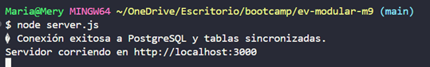
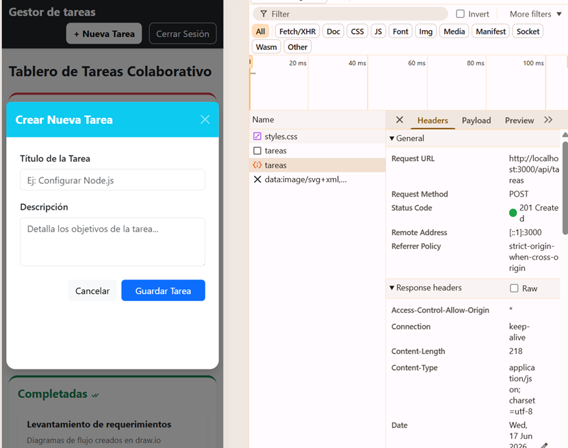
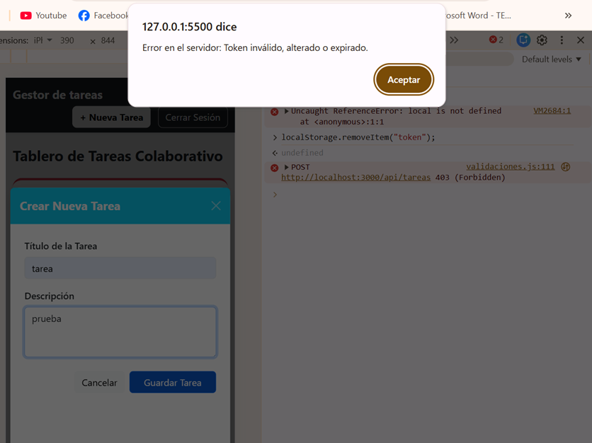

Descripción del Proyecto
Una solución integral, robusta y escalable para la administración de actividades y control de usuarios bajo el patrón de arquitectura MVC.
El sistema permite el flujo completo desde que un usuario se registca con credenciales totalmente seguras y encriptadas, inicia sesión para obtener un token de acceso firmado, y gestiona sus tareas personales en un tablero conectado en tiempo real a una base de datos relacional.
Tecnologías Utilizadas
Galería de Funcionamiento y Evidencias

Conexión de Base de Datos
Sincronización automatizada de modelos Sequelize con tablas relacionales en PostgreSQL.

Integración API (Status 201)
Evidencia de envío correcto del token: autorización y creación exitosa de registros.

Control de Acceso y Middleware
Validación de seguridad interceptando las rutas del CRUD si el token es eliminado o alterado.
Resultados y Métricas Alcanzadas
Las tareas del CRUD sólo permiten modificaciones bajo un token válido
Uso de hashing irreversible con bcrypt para máxima seguridad de cuentas.
Control de expiración con configuración dinámica -> JSON Web Tokens